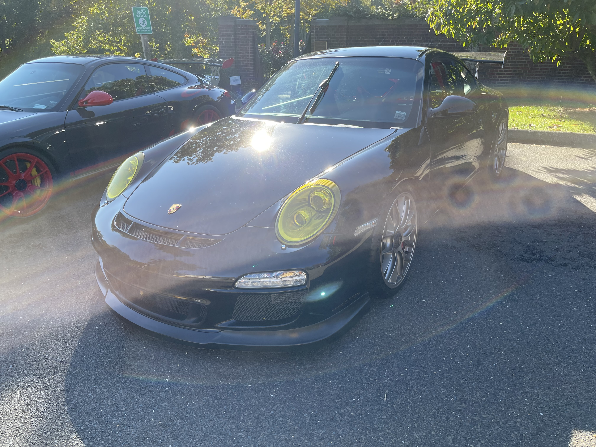
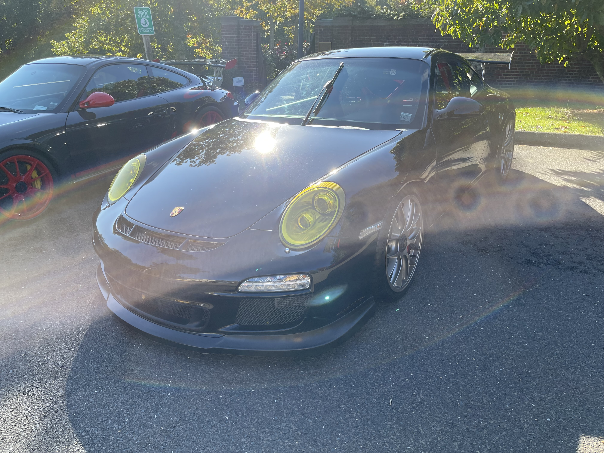

My Hobbies

- Technology
- Reading
- Automotive
That's pretty general pal, can you go into a bit more depth for me?
Sure
- Unix Machines and Keyboards
- Classic Literature
- Sometimes I will read contemporary stuff
- Car maintenance, modification, car shows, and a general admiration of automotive excellence.
To expand a bit. I enjoy working on and using Unix machines, and participating in the community.
I have built keyboards and quite like them. Currently daily a 65% with gateron black inks.
As far as reading goes, I still consider myself new to the hobby, with around 20+
books under my belt. I have mostly read classic literature, including Notes From Underground,
and Brave New World. I have recently finished Infinite Jest and am currently
reading Moby Dick
For auto, I am a student with not much money or a personal garage.
I currently daily drive a ford focus, no serious power, I cannot afford
to build a reliable AND powerful car, much less as a daily driver. I still
love my car, and cars in general. I feel lucky to call Connecticut my home,
since it is home to both Dreamride and Caffeine
& Carburetors, two amazing car shows local to our very own state.
If you like cars, Caffeine & Carburetors in New Canaan, CT, is an incredible show,
and you would be foolish to miss it. (Check them out at link below)
 
